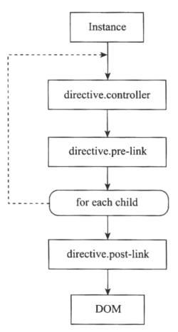

angularjs巩固实践-35-指令生命周期
指令是ng提出的一个概念，为HTML提供了DSL（特定领域语言）的扩展语法，并为组件化（Web Component)提供了帮助。
指令有自己的生命周期，一个指令从解析到生效，会经历inject、compile、controller加载、pre-link、post-link这几个主要阶段。以如下指令为例：1
2
3
4
5
6
7
8
9
10
11
12
13
14
15
16
17
18
19
20
21
22
23
24
25
26
27
28
29
30
31
32angular.module('com.ngnice.app').directive('directiveLife', function($log){
$log.info('injecting function directiveLife');
return {
restrict: 'EA',
transclude: true,
replace: true,
template: '<div><h2>count: {{count}} </h2><p ng-transclude></p></div>',
scope: {
count: '=',
},
compile: function(elm, iAttrs){
$log.info('compile', 'count value from attribute: ' + iAttrs.count);
return {
pre: function(scope, elm, iAttrs){
$log.info('pre-link', 'count value from attribute: '+ iAttrs.count, 'count value from scope: '+scope.count);
},
post: function(scope, elm, iAttrs){
$log.info('post-link', 'count value from attribute: '+ iAttrs.count, 'count value from scope: '+scope.count);
},
};
},
controller: function($scope){
$log.info('controller', 'count value from controller: '+ $scope.count);
}
};
});
angular.module('com.ngnice.app').controller('DemoController', function(){
var vm = this;
return vm;
});
上述代码创建了名为directiveLife的指令，用于展示指令的执行顺序，它有一个count属性，当页面中复用这个指令时可用于区分各自指令的执行过程。1
2
3
4
5<body ng-controller="DemoController as demo">
<div id="directiveLife">
<directive-life count="1"></directive-life>
</div>
</body>
然后可从控制台看到如下日志信息：1
2
3
4
5injecting function directiveLife
compile count value from attribute: 1
controller count value from controller: 1
pre-link count value from attribute: 1 count value from scope: 1
post-link count value from attribute: 1 count value from scope: 1
上述输出展示了指令执行时的顺序，每一个阶段都负责完成不同的功能。
如下时指令生命周期示意图：

injecting阶段
在ng第一次使用该指令时，会先调用注入函数来获取它依赖的服务，此过程仅发生在首次解析该指令时，即多此使用同一个指令只注入一次所依赖的服务。
在injecting阶段，因为在一个闭包中，所以所有directiveLife指令共享同一个作用域，所以此阶段设置的Directive的配置信息会被所有后续调用的指令共享，有点类似默认配置，但不建议在此配置，因为有更好的方法专门用于配置使用：
- ng中所有的Service时全局共享的，所以可将这类配置信息抽取到一个Constant中，然后在指令中注入该Constant
- 在config阶段配置默认信息
以下时ng指令注册源码：1
2
3
4
5
6
7
8
9
10
11
12
13
14
15
16
17
18
19
20
21
22
23
24
25
26
27
28
29
30
31
32
33
34
35
36
37
38
39
40
41
42
43
44
45
46var hasDirectives = {},
Suffix = 'Directive';
...
this.directive = function registerDIrective(name, directiveFactory){
assertNotHasOwnProperty(name, 'directive');
if(isString(name)){
assertArg(directiveFactory, 'directiveFactory');
if(!hasDirectives.hasOwnProperty(name)){
hasDirectives[name] = [];
$provide.factory(name + Suffix, ['$injector', '$exceptionHandler', function($injector, $exceptionHandler){
var directives = [];
forEach(hasDirective[name], function(directiveFactory, index){
try{
var directive = $injector.invoke(directiveFactory);
if(isFunction(directive)){
directive = {
compile: valueFn(directive)
};
}else if(!directive.compile && directive.link){
directive.compile = valueFn(directive.link);
}
directive.priority = directive.priority || 0;
directive.index = index;
directive.name = directive.name || name;
directive.require = directive.require || (directive.controller && directive.name);
directive.restrict = directive.restrict || 'A';
directive.push(directive);
}catch(e){
$exceptionHandler(e);
}
});
return directive;
}]);
}
hasDirectives[name].push(directiveFactory);
}else{
forEach(name, reverseParams(registerDirective));
}
return this;
};
由源码可知，ng的指令注册分为2种情况，一种时单个Directive注册，以名称和directiveFactory两个对象为参数；另一种时以Object对象key/value键值对为参数注册多个Directive,key为Directive名称，value为directiveFactory。
然后将指令的某个变量hasDirectives[name]的值初始化为一个空数组，这意味着ng可以声明多个同名的Directive，按照注册、解析、标注优先级的顺序逐个执行。其实ng对input元素的扩展就是利用这一点完成的。但在自己的程序中不建议这样做，因为会使得逻辑分散不利于维护和调试。
接下来，利用$provide.factory以指令名称加上Directive为后缀注册一个ng服务，所以可以利用ng的注入机制在Controller、Service中被注入：1
2
3
4
5angular.module('com.ngnice.app').controller('DemoController', function(directiveLifeDirective){
var vm = this;
console.log(directiveLifeDirective);
return vm;
});
实际使用中，不需要手动调用上述代码，因为指令是声明在HTML模板上的，ng会自动解析指令。在某些情况下，若需要手动编译模板追加到DOM上时，推荐写法时利用$compile服务解析指令和链接$scope，然后将编译结果追加到DOM上。
compile和link阶段
以上注入构造对象阶段完成后，ng会调用指令的compile函数，这个函数会在每一次指令被实例化时执行，执行时被传入2个参数，一个是原始的DOM节点，一个是它所包含的Attribute信息。这里的原始DOM节点指的是初始声明的节点，还没有被link过，所以此时虽然可以检查DOM信息和表达式字符串，但无法访问$scope对象，也无法获得表达式的结果值。
但此时是修改节点，插入子模版的最佳阶段，然后所有这些节点会被ng自动compile，在compile函数的最后一句返回接下来会用到的link函数，link函数包括pre和post2种。
在进入link阶段， ng根据在指令中声明的scope属性，创建一个独立或者非独立的scope，然后调用指令的controller来初始化这个scope。此时虽然不能涉及任何DOM节点操作，但可以利用ng的$injector注入$scope服务，在ng指令中这是被复用的。由于不涉及任何DOM操作，只包含业务逻辑代码，所以它可被同一节点或子节点上的指令通过设置require属性获取，比如为了修改或添加ngModel的parse函数而设置require:'ngModel'其实引用的就是当前结点上的ngModelController控制器。
在controller中初始化指令的$scope后，将进入解析阶段，分为两个阶段，pre-link和post-link，对同一指令的所有实例他们只执行一次，比如ngRepeat每一个item会被执行一次，因为在前面的controller中以及初始化好$scope对象，所以在这里$scope是可用的。
注：此处的scope与Controller中的$scope不同，此处的scope对象是传入函数的参数，而Controller中的$scope是被ng注入的。
在此阶段，每个表达式都会确定值，然后ng开始将模板渲染到DOM，若在此阶段想添加模板，则有些晚了，因为ng不会自动解析，只能手动调用$compile服务来编译链接模板，并插入到指定DOM节点中。
ng中的link函数有多种方式定义，其中post-link最重要，若直接在指令中返回一个函数，或设置link属性为一个函数，则默认为post-link函数。
通过下例理解pre-link和post-link的区别，在嵌套的指令中标注了编号：1
2
3
4
5
6
7
8
9
10<body ng-controller="DemoController as demo">
<div id="directiveLife">
<directive-life count="1">
<directive-life count="2">
<directive-life count="3">
</directive-life>
</directive-life>
</directive-life>
</div>
</body>
控制台输出信息：1
2
3
4
5
6
7
8
9injecting function directiveLife
pre-link count value from attribute: 1 count value from scope: 1
pre-link count value from attribute: 2 count value from scope: 2
pre-link count value from attribute: 3 count value from scope: 3
post-link count value from attribute: 3 count value from scope: 3
post-link count value from attribute: 2 count value from scope: 2
post-link count value from attribute: 1 count value from scope: 1
从输出信息可以看出，injecting只会初始化一次，ng在链接指令时，先执行pre-link，然后深度遍历每一个子节点的pre-link直到最深的子节点，然后从最深子节点开始返回依次冒泡触发post-link，是一个先进后出的栈模型。
为什么post-link与pre-link是相反的顺序呢？
由于有时指令操作需要直到子元素的信息，如子元素个数，DOM结构等，所以在指令的link阶段，执行pre-link时子节点的DOM还无法确定，不适合添加节点事件。但pre阶段非常适合初始化内部下级指令需要的数据，当下级指令需要得到一些初始化数据的时候，那么就可以写在pre-link函数中，比如ng中的ngInit指令，它的作用就是在pre-link阶段为子节点中的指令设置初始值的。1
2
3
4
5
6
7
8
9
10var ngInitDirective = ngDirective({
priority: 450,
compile: function(){
return {
pre: function(scope, element, attrs){
scope.$eval(attrs.ngInit);
},
};
}
});
当然，初始化数据也可以在controller中进行，但当若需要先获取DOM的信息（如ngInit的表达式字符串）才能初始化时，pre-link函数就非常适合了，在ng中类似的指令还有ngForm。
在实际的自定义指令中，使用pre-link的机会不多，大都是post-link，在post-link执行时内嵌指令以及被链接过，DOM结构已稳定，所以在post阶段可放心为当前节点或子节点添加行为或监听事件，如自动聚焦、双向绑定。